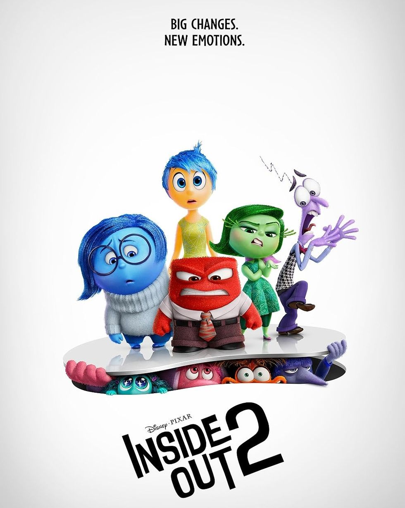
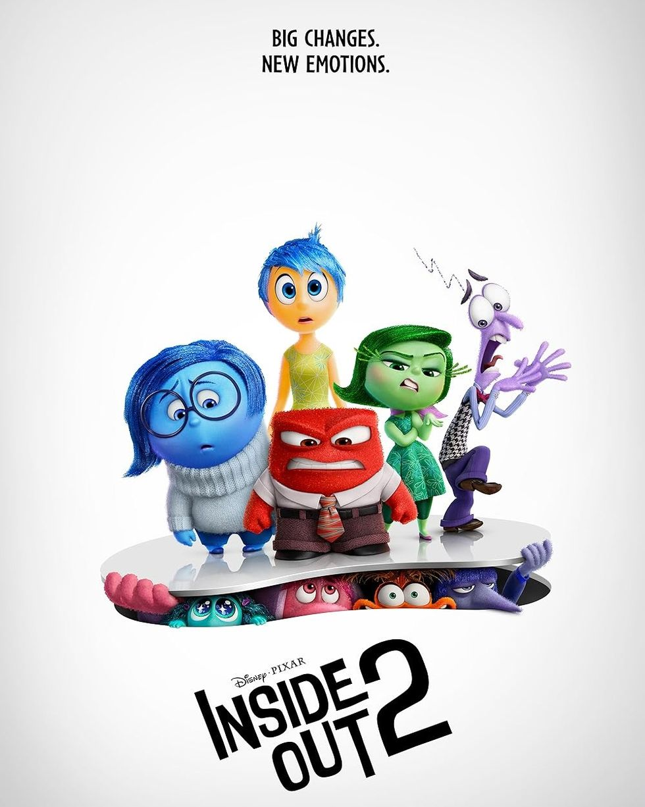

One man's brutal campaign for vengeance takes on national stakes after it's revealed he's a former operative of a powerful and clandestine organization known as Beekeepers.
Gru welcomes a new member to the family, Gru Jr., who's intent on tormenting his dad. However, their peaceful existence soon comes crashing down when criminal mastermind Maxime Le Mal escapes from prison and vows revenge against Gru
Joy, Sadness, Anger, Fear and Disgust have been running a successful operation by all accounts. However, when Anxiety shows up, they aren't sure how to feel.